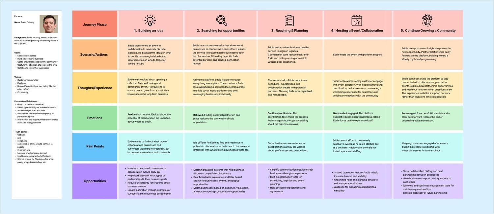
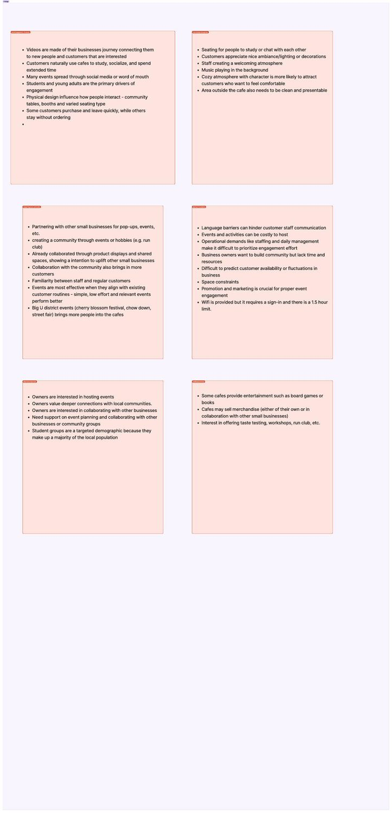
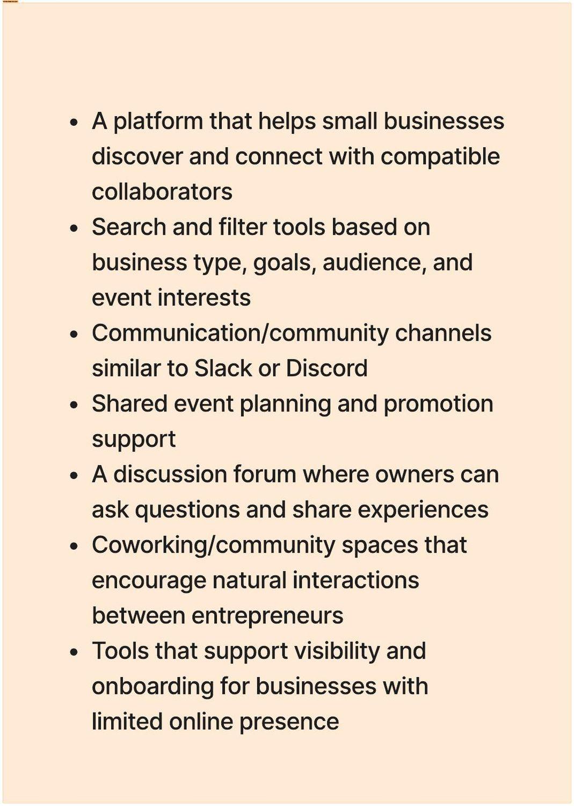
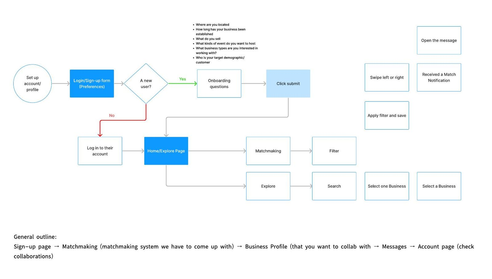
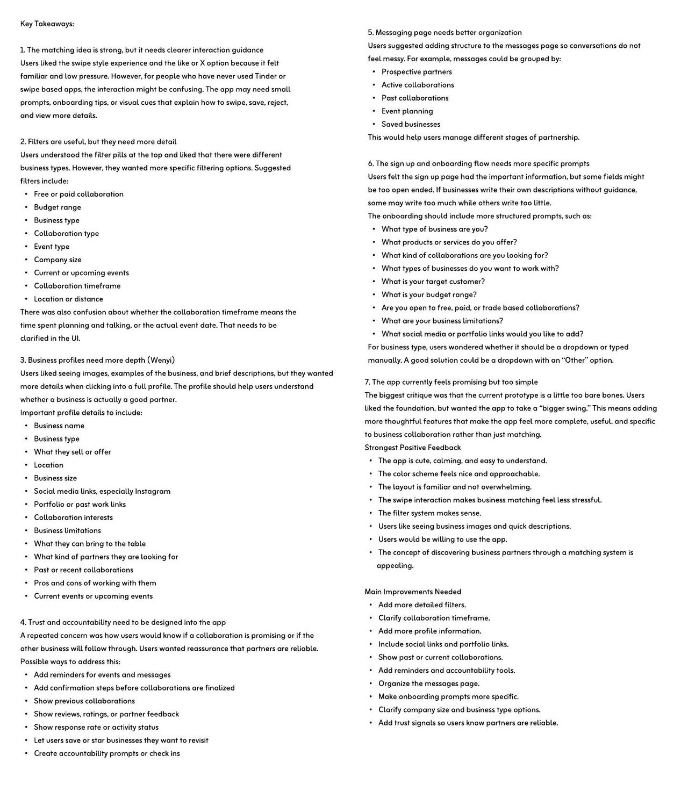

Independent café owners want to collaborate with each other. They send DMs, emails and Reddit posts into the void. Loko is a platform that makes finding a collaborator feel like finding a date — because the hard part was never the wanting.
I have sent like 5 DMs already. I also emailed people, posted on Reddit, even tried reaching out through Instagram and nobody replies.
Café owner — narrative prototype, Scene 1
I just wanna host more events or collabs but even finding people is actually so hard.
Café owner — narrative prototype, Scene 1
Outreach between small businesses is scattered across Instagram DMs, email and Reddit, with slow or no replies. The intent to collaborate is already there. The channel is broken.

We ran field studies and co-design sessions across independent cafés in the U-District, then synthesized findings into four themes.
Owners want to host events and collaborate. What they need is support planning them — and a way to find each other that doesn't cost a week of unanswered messages.
Synthesis — "Want more resources" theme

Before designing anything we mapped who touches whom — owners, staff, customers, student groups, neighboring businesses and the district events that already pull people in.
Ecosystem map · service blueprint
The swipe mechanic came from dating apps for a specific reason: owners told us the hardest part is not knowing who's open to it. A directory solves discovery. Swiping solves the signal — everyone on the other side has already said yes in principle.
Search and filter by business type, goals, audience and event interests. Or swipe through owners who have already flagged themselves as open to collaborating.
Messaging built into the platform, so outreach stops scattering across Instagram, email and Reddit. One place, one inbox, one thread per collaboration.
Shared event planning and promotion support, community channels, and a discussion forum where owners ask questions and share what worked.

We wrote a six-scene narrative prototype rather than jumping to screens: a frustrated café owner, a friend who recommends the platform, a bakery owner who replies within hours, a Zoom call, and a matcha-and-pastry pop-up that brings in both a regular and a first-time customer.
Writing the story first exposed something a wireframe would have hidden — the moment that matters isn't the match. It's the reply. Everything in the interface should be working toward a response arriving fast enough to keep the momentum.

Sage and cream, rounded cards, soft shadows. The visual language is deliberately calm: owners told us outreach already feels like rejection, so the interface shouldn't add to it. Real Seattle businesses populate the prototype — Offline Coffee, Seattle Fish Guys, Floranda Pop-Up — because testing against invented brands hides whether the card layout actually carries enough information to judge a partner.
Home · explore · filters · messages · events · detail
We put the prototype in front of users and the headline was encouraging — and then specific. People liked it. They also told us exactly where it was thin.
The app is cute, calming and easy to understand. The swipe interaction makes business matching feel less stressful.
Strongest positive feedback, user testing round
Seven takeaways came out of the session. The one I owned:
Users liked the images and short descriptions, but a card doesn't tell you whether someone is a good partner. They wanted social and portfolio links, past collaborations, business limitations, what the owner can bring to the table, and what they're looking for — the things you'd actually weigh before committing a weekend to a joint pop-up.

Ten think-aloud sessions on a dating app — and one missing button that stopped everybody.